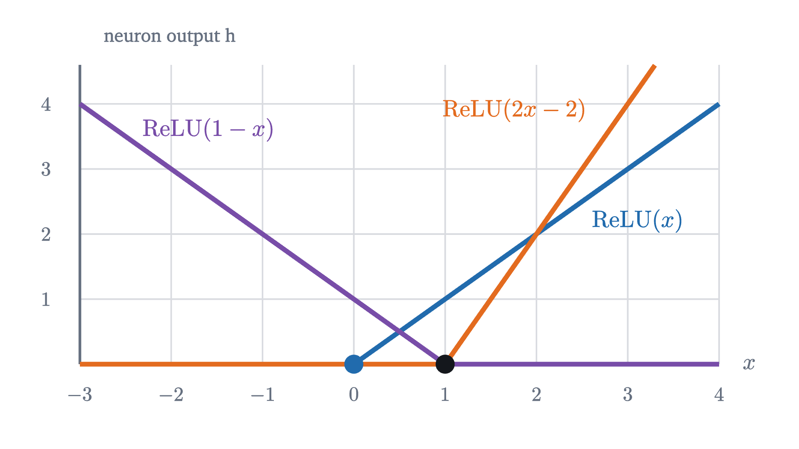
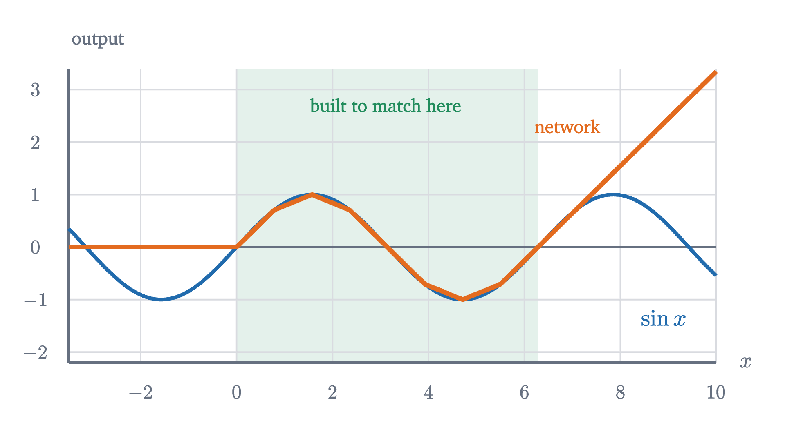
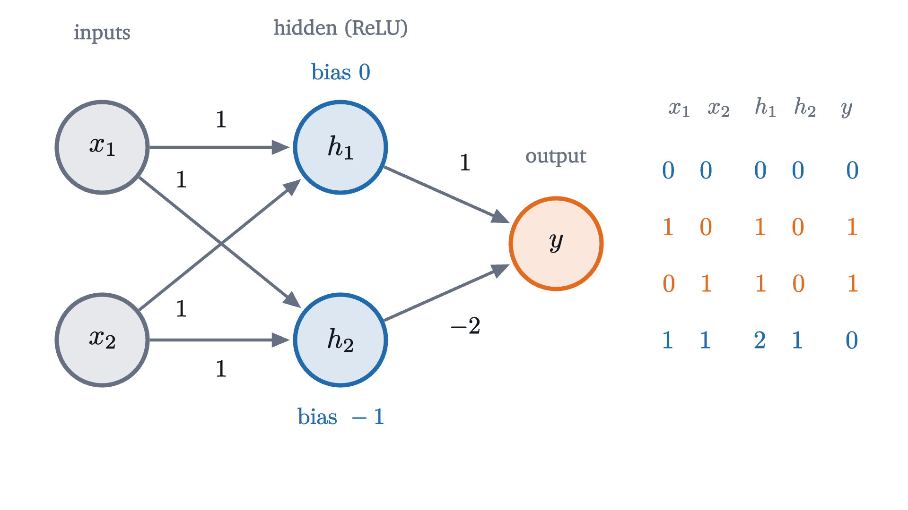
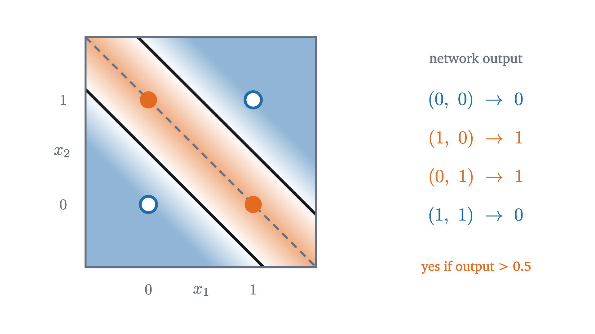

What a neural network computes
A neuron is a linear score followed by a bend. Sums of bends build bumps, bumps build any curve, and two neurons solve XOR. All with explicit weights.
AssumesClassification: drawing a line between yes and noWhat slope means, and why y = mx + b is a line
The last lesson ended with a defeat. A classifier that computes one linear score, $z = w_1x_1 + w_2x_2 + b$, and says “yes” when $z > 0$ has a straight decision boundary, and no straight boundary separates the four XOR points, where the answer is yes exactly when one of the two inputs is 1 and the other is 0.
One linear score is not enough, so use several: compute a few scores from the inputs, then compute a final score from those. Try it with one input. Let the first score be $z = 2x + 1$ and feed it into a second, $u = 3z - 4$. Then $u = 3(2x + 1) - 4 = 6x - 1$. Two layers of arithmetic have produced one linear function of $x$, and this always happens: a linear function of linear functions is linear, so a stack of linear scores, however tall, has exactly the power of one.
Something has to break the linearity between the layers, and it takes very little: one bend.
A neuron is a score followed by a bend
The simplest function with a bend in it is the rectified linear unit, written $\operatorname{ReLU}$:
It passes positive numbers through unchanged and replaces negative numbers by 0. Apply it to a linear score and you have the basic unit of a neural network.
The part inside the parentheses is the linear score of the earlier lessons; mathematicians call a linear function plus a constant an affine map. The activation is the only new ingredient. Logistic regression is itself a single neuron, with the sigmoid as its activation.
With one input, a ReLU neuron is $h(x) = \operatorname{ReLU}(wx + b)$. Take $w = 2$ and $b = -2$. At $x = 0, 1, 2, 3$ the score $2x - 2$ is $-2, 0, 2, 4$, so the neuron outputs $0, 0, 2, 4$. Its graph is flat at 0 until the score turns positive, at $x = 1$, and from there it is a ramp of slope 2.

One neuron cannot do much: its graph has a single kink. The interest is in what sums of them can do.
From ramps to a bump
Add the outputs of several neurons, each multiplied by a number of our choosing. Start with two, and subtract a ramp that starts at $x = 1$ from a ramp that starts at $x = 0$:
Pause and try
Compute $s(x)$ at $x = -1,\ 0.5,\ 1,\ 3$ and describe its graph.
Show answerHide answer
$s(-1) = 0 - 0 = 0$. $s(0.5) = 0.5 - 0 = 0.5$. $s(1) = 1 - 0 = 1$. $s(3) = 3 - 2 = 1$. The graph is 0 up to $x = 0$, climbs with slope 1 until $x = 1$, and is flat at 1 from then on: once both neurons are active, their slopes $1$ and $-1$ cancel. It is a step with a sloped riser.
Two neurons raise the output and hold it. To make a bump, a function that is zero far to the left, rises, and returns to zero for good, the output has to be brought down again, which takes more downward slope. Subtract the second ramp twice, so that the total slope after $x = 1$ is $1 - 2 = -1$, and then add a third ramp at $x = 2$ to cancel the fall once it reaches zero:
Check it: $T(0) = 0$, $T(1) = 1$, $T(1.5) = 1.5 - 1 = 0.5$, $T(2) = 2 - 2 = 0$, and $T(3) = 3 - 4 + 1 = 0$. It is a tent of height 1 standing on the interval $[0, 2]$, and zero everywhere else.
Two neurons could not have made a bump, and the proof uses the rule that the figure illustrates. A weighted sum of ReLU neurons is continuous and made of straight pieces, and its slope can change only at a neuron’s kink. With two neurons there are at most two kinks, so at most three pieces. For a bump, the first and last pieces are the zero function, so the function is 0 at both kinks, and the middle piece is a straight line through two zeros, which is zero too. A bump needs three kinks: up, over the top, and back to flat.
Any curve from bumps, and the weights to do it
A tent can be moved, by shifting the kinks, widened, by spreading them, and scaled, by multiplying the three output weights. So we can plant a tent of any height at any place. That is enough to build a function through any list of points. Suppose we want a curve through
Plant a tent of height 2 centered at $x = 1$, one of height 1 centered at $x = 2$, and half a tent of height 3 rising toward $x = 3$. At $x = 1$ only the first tent is nonzero, so the sum is 2; at $x = 2$ only the second, so the sum is 1; and in between the sum of two straight pieces is straight. The sum joins the dots with straight segments.
Counting neurons, we can be more economical. Each tent uses three neurons, but neighboring tents have kinks at the same places, and two neurons with the same kink can be merged into one by adding their output weights. That leaves one neuron per kink, and the weight of each is determined by a simple rule: a neuron’s output weight is the change of slope at its kink. The segments above have slopes $2, -1, 2$. So the slope must change by $+2$ at $x = 0$ (from flat), by $-3$ at $x = 1$ and by $+3$ at $x = 2$:
Pause and try
Check that $g$ passes through all four points.
Show answerHide answer
$g(0) = 0$. $g(1) = 2 - 0 + 0 = 2$. $g(2) = 4 - 3 + 0 = 1$. $g(3) = 6 - 6 + 3 = 3$.
The arrangement we have been using has a name and a standard picture. The inputs feed a row of neurons, called a hidden layer because its outputs are neither inputs nor the final answer, and the output is a weighted sum of the hidden neurons plus a bias.
The rule for the weights is a theorem, and it holds for any list of points.
This is a network with one hidden layer of $n$ ReLU neurons, with $w_k = 1$, $b_k = -t_k$, $c_k = m_{k+1} - m_k$ and $c_0 = g(t_0)$. The figure at the top of the page applies the theorem to the broken line through points on the sine curve at $n$ equally spaced inputs. With 4 neurons the largest gap between the network and $\sin x$ is $0.21$; with 8 it is $0.070$; with 16, $0.019$; with 32, $0.0048$. Each doubling divides the error by between three and four, and the ratio approaches four.
The universal approximation theorem, and its fine print
How good the approximation gets depends on how smooth the target is. For a twice-differentiable function $f$ whose second derivative is at most $M$ in size, the broken line through points spaced $h$ apart is never farther than $Mh^2/8$ from $f$. This is the classical error bound for linear interpolation, proved in numerical analysis from Rolle’s theorem; for $\sin x$, $M = 1$, and with 32 pieces it gives $0.0048$. For an arbitrary continuous $f$ on a closed bounded interval there is no such formula, but the error still tends to 0 as the spacing shrinks, because a continuous function on a closed bounded interval is uniformly continuous (the Heine–Cantor theorem). Together with our theorem, that proves that one hidden layer of ReLU neurons can approximate any continuous function of one variable on a closed bounded interval, as closely as desired.
The same is true with any number of inputs and almost any activation. We state this without proof.
ReLU and the sigmoid are continuous and are not polynomials, so both qualify. The statement is often summarized as “a neural network can learn anything”, which claims far more than the theorem does. Read what it says.
It says suitable parameters exist. It does not say how many neurons are needed, and for functions of many variables $N$ can be astronomically large. It does not say that gradient descent will find those parameters: the loss surface of a network is not a bowl, and the guarantees of the lesson on gradient descent for non-convex losses are weak. It concerns a function $f$ that is known everywhere on $K$, whereas training has only finitely many examples, so it is silent on how a network behaves between them, which is the subject of the lesson on overfitting. And it promises nothing outside $K$.

Two inputs: solving XOR
Now back to the problem that started this. With two inputs, a neuron $\operatorname{ReLU}(w_1x_1 + w_2x_2 + b)$ is zero on one side of the line $w_1x_1 + w_2x_2 + b = 0$ and rises like a tilted plane on the other. Its kink is a crease along that line.
The XOR points are $(0,0)$ and $(1,1)$, labeled 0, and $(1,0)$ and $(0,1)$, labeled 1. Look at the sum $s = x_1 + x_2$ at each: it is $0$ for the first point, $2$ for the second, and $1$ for both points labeled 1. So in terms of $s$ we need an output that is low at $s = 0$, high at $s = 1$ and low again at $s = 2$. That is the tent $T$ we already built, minus one neuron we do not need:
Pause and try
Compute $h_1$, $h_2$ and the output at each of the four XOR points.
Show answerHide answer
At $(0, 0)$: $h_1 = 0$, $h_2 = \operatorname{ReLU}(-1) = 0$, output 0. At $(1, 0)$ and at $(0, 1)$: $h_1 = 1$, $h_2 = \operatorname{ReLU}(0) = 0$, output 1. At $(1, 1)$: $h_1 = 2$, $h_2 = 1$, output $2 - 2 = 0$. The output equals the XOR label at every point.

To turn the output into a yes or no, say yes when it exceeds $\frac12$. The output equals $T(x_1 + x_2)$ wherever $x_1 + x_2 \le 2$ and is negative beyond that, where the tent’s third neuron is missing, so that happens when $\frac12 < x_1 + x_2 < \frac32$: in a diagonal band, bounded by two parallel lines. No single line could produce this region. Two creases can.

There is a second way to see why this works, and it is the one that generalizes. The output neuron is a linear function of $h_1$ and $h_2$, so in the plane of $(h_1, h_2)$ its decision boundary $h_1 - 2h_2 = \frac12$ is a straight line. The last layer is still a linear classifier. What has changed is where the points are. The hidden layer sends each input $(x_1, x_2)$ to the point $(h_1, h_2)$:
The two points labeled 1 land on the same spot, and the two labeled 0 land on either side of it, no longer in each other’s way.
This is the working picture of a neural network. The hidden layer re-draws the input space, folding it along the creases of its neurons, and the final layer draws one straight line through the result. In the previous lesson we rescued XOR by inventing a feature by hand; here the features $h_1$ and $h_2$ are computed by neurons, and their weights are parameters like any others. Training a network means choosing the fold and the line together.
Worked examples
Stepping back
The difficulty at the start was that combining linear functions produces nothing new. The whole subject turns on the smallest possible departure from linearity, a function that is linear on each side of one point. A neuron then contributes a kink, a sum of neurons contributes a broken line with weights that can be written down, and broken lines can be made to follow any continuous curve. In two dimensions the kinks become creases, and a layer of creases can rearrange points so that a line separates what no line could separate before.
We chose every weight here by hand, which was possible because the examples were tiny. A network with thousands of weights has to find them by gradient descent, and for that it needs the derivative of the loss with respect to each one. The next lesson, on backpropagation, shows how to get all of them at once.
Check yourself
The function $f(x) = \operatorname{ReLU}(x - 1) - \operatorname{ReLU}(x - 3)$ is a network with two hidden neurons. What is $f(5)$, and what does the graph look like?
Problems
The first three repeat the lesson’s computations, the next two combine them, and the last two extend them.
Problem 1
For the neuron $h(x) = \operatorname{ReLU}(2x - 3)$, find $h(0)$, $h(1)$, $h(2)$, $h(3)$, the location of the kink, and the slope of the ramp.
Show solutionHide solution
The scores are $-3, -1, 1, 3$, so the outputs are $0, 0, 1, 3$. The kink is where $2x - 3 = 0$, at $x = 1.5$, and the ramp has slope 2, the weight.
Problem 2
Evaluate the XOR network of the lesson at $(0.5, 0.5)$, $(0.25, 0.25)$ and $(2, 2)$. Which of these would it label “yes” with the threshold $\frac12$?
Show solutionHide solution
At $(0.5, 0.5)$: $s = 1$, $h_1 = 1$, $h_2 = 0$, output 1: yes. At $(0.25, 0.25)$: $s = 0.5$, $h_1 = 0.5$, $h_2 = 0$, output $0.5$, which does not exceed $\frac12$: no (it is exactly on the boundary). At $(2, 2)$: $s = 4$, $h_1 = 4$, $h_2 = 3$, output $4 - 6 = -2$: no. Beyond $s = 2$ the output keeps falling, because the third neuron of the tent was left out.
Problem 3
Find a ReLU network equal to the broken line through $(0, 2), (2, 0), (3, 0), (5, 4)$ on $[0, 5]$, and check it at $x = 5$.
Show solutionHide solution
The slopes are $-1$, $0$ and $2$. The output bias is $g(0) = 2$. The slope changes are $-1$ at $x = 0$, $+1$ at $x = 2$ and $+2$ at $x = 3$. So $g(x) = 2 - \operatorname{ReLU}(x) + \operatorname{ReLU}(x - 2) + 2\operatorname{ReLU}(x - 3)$. Check: $g(5) = 2 - 5 + 3 + 4 = 4$. Also $g(2) = 2 - 2 = 0$ and $g(3) = 2 - 3 + 1 = 0$.
Problem 4
Show that (a) $x = \operatorname{ReLU}(x) - \operatorname{ReLU}(-x)$, (b) $|x| = \operatorname{ReLU}(x) + \operatorname{ReLU}(-x)$, and (c) $\max(a, b) = a + \operatorname{ReLU}(b - a)$, for all real numbers. What does (a) say about what a ReLU layer can pass along?
Show solutionHide solution
If $x \ge 0$ then $\operatorname{ReLU}(x) = x$ and $\operatorname{ReLU}(-x) = 0$; if $x < 0$ then $\operatorname{ReLU}(x) = 0$ and $\operatorname{ReLU}(-x) = -x$. (a) The difference is $x - 0 = x$ in the first case and $0 - (-x) = x$ in the second. (b) The sum is $x$ in the first case and $-x$ in the second, which is $|x|$ in both. (c) If $b \ge a$ then $a + (b - a) = b = \max(a, b)$; if $b < a$ then $a + 0 = a = \max(a, b)$. Part (a) says that two ReLU neurons can carry a number through a layer unchanged, so a layer loses no information unless its weights are chosen to discard it.
Problem 5
A one-hidden-layer network with $N$ ReLU neurons and one input is used on the whole real line. (a) Explain why its graph has at most $N$ kinks. (b) What does the graph look like far to the left and far to the right? (c) Deduce that no such network equals $\sin x$ on the whole line, and say why this does not contradict the universal approximation theorem.
Show solutionHide solution
(a) Each neuron $c_k\operatorname{ReLU}(w_kx + b_k)$ is linear on each side of its kink at $x = -b_k/w_k$ (and is constant if $w_k = 0$). A sum of such functions is linear on any interval containing no kink, so its slope can change only at the at most $N$ kinks. (b) To the left of the leftmost kink and to the right of the rightmost one, the network is a single linear function: a straight ray on each side. (c) $\sin x$ oscillates forever, and a straight ray does not: a ray is either constant or unbounded, while $\sin x$ is bounded and not constant on any ray. So the two functions differ somewhere, for any $N$. The theorem concerns approximation on a closed bounded set $K$, with $N$ allowed to depend on $K$ and on the accuracy. It makes no claim about the whole line.
Problem 6
(A different solution to XOR.) Let $h_1 = \operatorname{ReLU}(x_1 - x_2)$, $h_2 = \operatorname{ReLU}(x_2 - x_1)$ and $\text{output} = h_1 + h_2$. (a) Show that this network also computes XOR on the four points. (b) Describe its “yes” region for the threshold $\frac12$. (c) The two networks agree on all four training points. Do they agree at $(0.5, 0.5)$? What does that say about what the data determine?
Show solutionHide solution
(a) By part (b) of problem 4, $h_1 + h_2 = |x_1 - x_2|$. At $(0, 0)$ and $(1, 1)$ this is 0; at $(1, 0)$ and $(0, 1)$ it is 1. (b) The output exceeds $\frac12$ when $|x_1 - x_2| > \frac12$: the two regions on either side of the band around the diagonal $x_1 = x_2$, that is, $x_2 < x_1 - \frac12$ or $x_2 > x_1 + \frac12$. (c) At $(0.5, 0.5)$ this network outputs $0$ (no), while the lesson’s network outputs $1$ (yes). Both fit the four data points perfectly and they disagree in between. The data fix the function only at the data; what a network does elsewhere depends on which of the many fitting networks training happens to find. This is the question of generalization, which the universal approximation theorem does not address and the lesson on overfitting takes up.
Problem 7
(Kinks and creases.) (a) Using the kink-counting argument of the lesson, show that the tent $T$ cannot be written with fewer than three ReLU neurons, even if an output bias is allowed. (b) In the XOR network both hidden neurons use the same weights $(1, 1)$, so their creases are parallel. Give the equations of the two creases and say which of the four XOR points lie on a crease.
Show solutionHide solution
(a) $T$ has slope $0$ for $x < 0$, $1$ on $(0, 1)$, $-1$ on $(1, 2)$ and $0$ for $x > 2$, so its slope changes at three places: $0$, $1$ and $2$. A network $c_0 + \sum c_k\operatorname{ReLU}(w_kx + b_k)$ can change slope only at the kinks of its neurons, and each neuron has at most one kink. The bias $c_0$ shifts the graph up or down and creates no kink. So at least three neurons are needed. (b) The crease of $h_1$ is where its score is zero: $x_1 + x_2 = 0$, which passes through $(0, 0)$. The crease of $h_2$ is $x_1 + x_2 = 1$, which passes through $(1, 0)$ and $(0, 1)$. The point $(1, 1)$ lies beyond both creases, where both neurons are on.